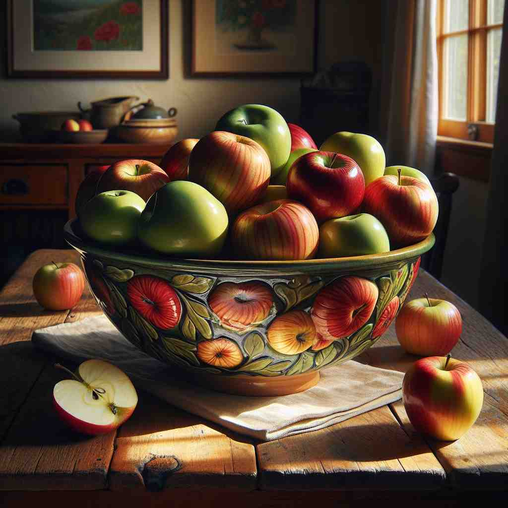

💬 There are several apples in the bowl on the table. 桌子上的碗里有几个苹果。

💬 The teacher noticed that several students raised their hands. 老师注意到有几位学生举手。
💬 There are several apples in the bowl on the table. 桌子上的碗里有几个苹果。
💬 The teacher noticed that several students raised their hands. 老师注意到有几位学生举手。
🔈 [ˈsevrəl]
💬 I have several apples in my bag. 我的包里有好几个苹果。
🔍 几个: 想象一下，你的书包里有一些苹果，不是只有一个，也不是很多很多，可能有 3 个，4 个，或者 5 个。这就是“几个”的意思。
💬 Several children are playing in the park. 几个孩子正在公园里玩耍。
🔍 几个: 你到公园里去，看到一些小朋友在玩，不是只有一个小朋友，也不是整个公园都挤满了小朋友，可能有 3 个，4 个，或者 5 个小朋友。这就是“几个”的意思。
💬 I bought several books from the bookstore. 我从书店买了幾本書。
🔍 几: 你去了书店，买了一些书回来，不是只买了一本书，也不是买了一大堆抱都抱不动，可能是买了 2 本、3 本或者 4 本书。这就是“几”的意思。
🧠 “several” 的核心意思是“一些”，表示数量不多，但也不止一个，通常指 3 个或 3 个以上，但不超过 10 个左右。
⬅️ a few（一些）、some（一些）： “several” 和 “a few” 的意思很接近，都表示数量不多。“some” 比 “several” 的数量范围更广，可以指更多或更少的东西。
🔀 one（一个）、many（许多）： “one” 表示只有一个，与 “several” 的多个意思相反。“many” 表示很多，也与 “several” 的数量不多意思相反。
🌳 来源于拉丁语词根 "separ"，意为 "分开"，加上形容词后缀 "-al"，使之成为形容词，表示 "几个" 或 "一些"，传达的是多于两个但不太多的数量。
💡 记忆 "several" 可以联想为 "separate all"，即分成几个部分，帮助记住它表示 "几个" 的意思。
🗝️ adj. separate or respective 各自的
🎭 在一个会议室里，经理将各个小组负责人召集在一起。她分发了一些文件，说道：'请每位负责人查看自己的任务说明。'这里的 'several' 强调的是每个小组分别的、各自的任务。
💬 They went their several ways after the meeting. 他们在会议结束后各自离开。
🤔 从"多个"延伸到"各自的"
🗝️ adj. different or various 不同或多样
🎭 在一个集市上，摊位上摆放着各种新鲜的水果。有红彤彤的苹果、金黄的香蕉、翠绿的葡萄。'several' 在这表示不同种类的多样性。
💬 The product comes in several colors. 该产品有多种颜色可供选择。
🤔 多个事物往往各不相同
🗝️ pron. more than one but fewer than many 超过一个但少于许多
🎭 在一个图书馆的长椅上，几名学生正在埋头学习。虽然人数比几个少，但和一大群相比并不算多。'several' 在这里指的是这种介于两者之间的数量。
💬 Several of the books were damaged. 几本书受到了损坏。
🤔 核心含义的代词用法